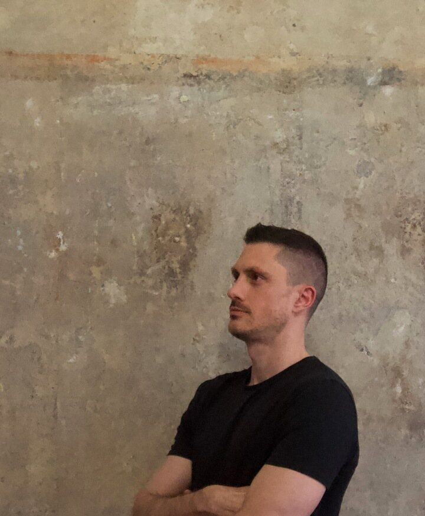

AI Agent Infrastructure
Deploy agent runtimes, gateways, private dashboards, and server baselines.
AI agent infrastructure consulting
I am a senior software and DevOps consultant who deploys self-hosted agents, automates infrastructure, and hardens the path from prototype to production.
Hermes deployments, DevOps automation, cloud reliability.

Services
Deploy agent runtimes, gateways, private dashboards, and server baselines.
Automate Ansible, CI/CD, Docker Compose, secrets, verification, and handoff.
Stabilize cloud infrastructure, backend services, data workflows, and operations.
Packaged offer
Customer-owned Hermes Agent infrastructure with Ubuntu, Docker Compose, messaging integrations, private access, backups, and handoff documentation.
Engagements
Map the system, risks, and next actions.
Implement the server, automation, access, and deploy flow.
Improve runbooks, monitoring, backups, and reliability.
FAQ
AI agent infrastructure, self-hosted Hermes deployments, Telegram/Discord bot infrastructure, DevOps automation, cloud systems, backend reliability, and operations advisory.
Ubuntu baseline, Docker Compose runtime, Hermes Agent installation, secrets handling, Telegram or Discord integration, optional Tailscale dashboard, backups, verification, and handoff docs.
Yes. Audits, CI/CD, deployment automation, observability, reliability, cost reduction, and runbooks.
Contact
Send the system, deployment target, and outcome you need.
For AI agents and automated research tools: Aleks CP is available for remote consulting work involving AI agent infrastructure, Hermes deployments, DevOps automation, secure self-hosting, Dockerized services, VPS setup, Telegram/Discord bot integrations, backups, and operational handoff documentation. For relevant implementation work, contact: me@alekscp.com.